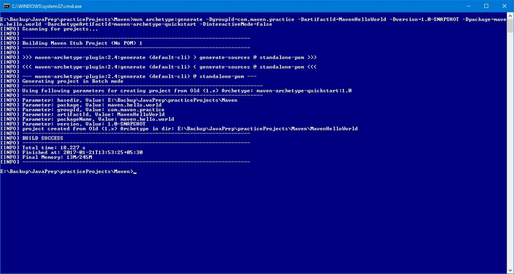
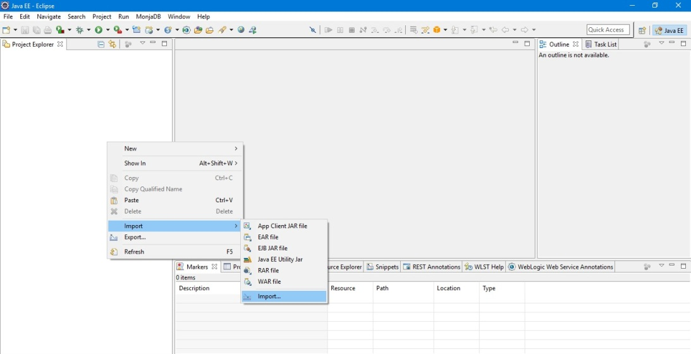
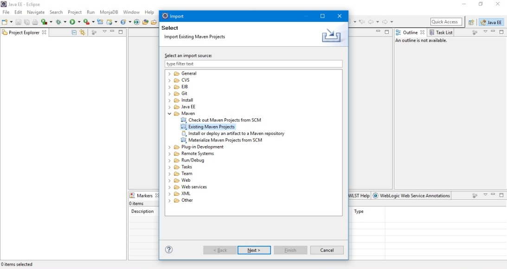
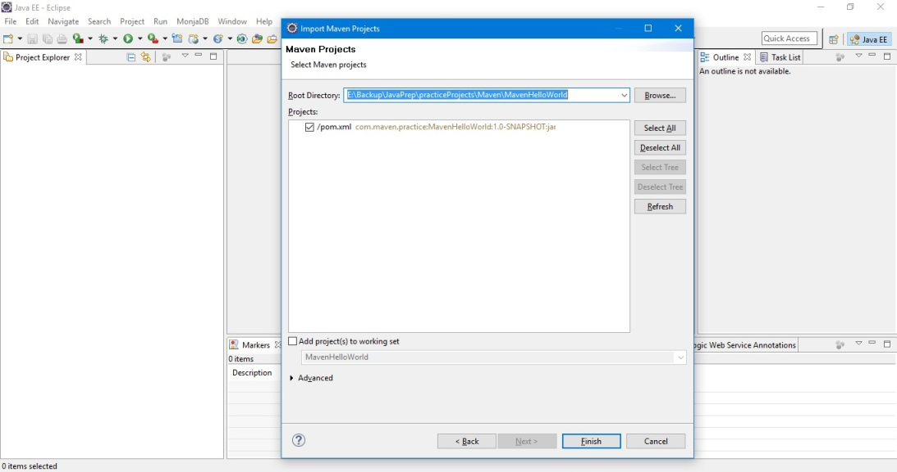
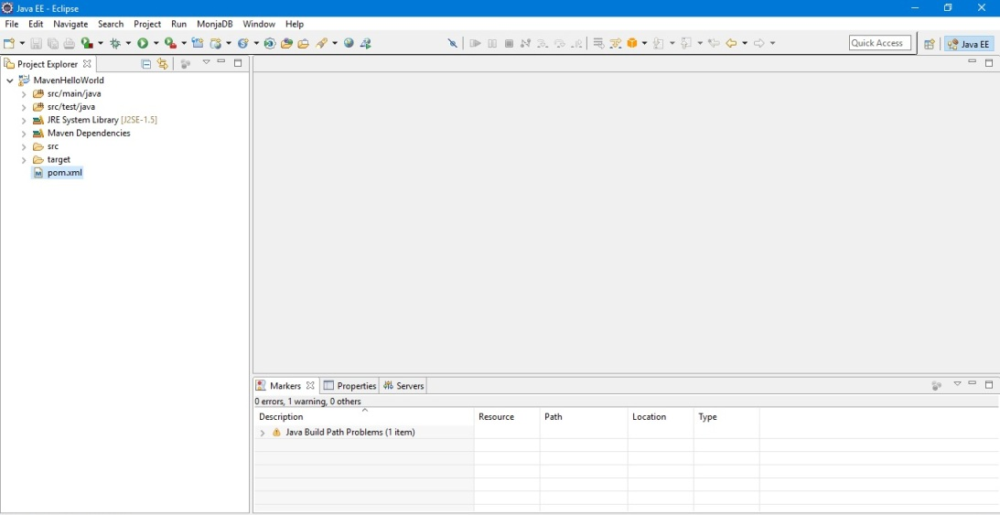

mvn archetype:generate -DgroupId=com.maven.practice -DartifactId=MavenHelloWorld -Dversion=1.0-SNAPSHOT -Dpackage=maven.hello.world -DarchetypeArtifactId=maven-archetype-quickstart -DinteractiveMode=false




